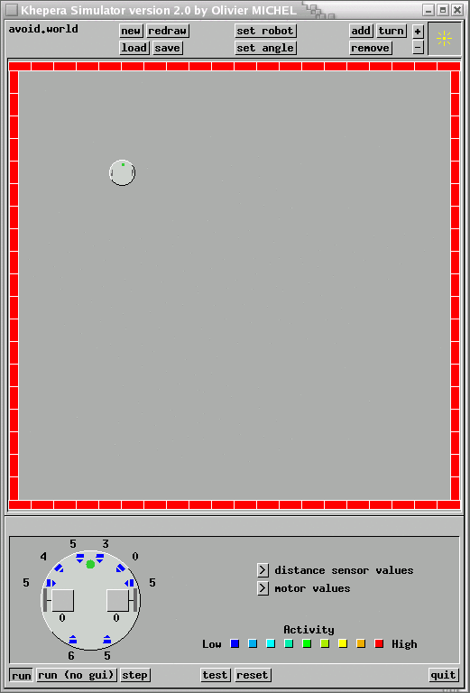

|
|||||||
| [ Home ] | [ Software ] | [ Curriculum ] | [ Hardware ] | [ Community ] | [ News ] | [ Publications ] | [ Search ] |
|
The Khepera SimulatorThe Khepera simulator is a bit out-dated and not easy to use. Our goal is to reproduce the abilities of the Khepera simulator in the Stage simulator. However, for the time being, if you want to use a simulator that can detect light from simulated sources, then this is the simulator to use. The Khepera simulator starts up in "run" mode. To move the robot, add objects to the world, etc. you need to get out of "run" mode. You get into and out of modes by clicking on the buttons at the top or bottom of the simulator window.

To load a different world, press the "load" button, and then type "avoid", for example. ".world" will automatically be added to the filename, so don't type it. To save a world, press the "save" button, then type the filename. ".world" will automatically be added to the filename, so don't type it.
Pyro Modules Table of Contents
Modules
Additional ResourcesReference: PyroSiteNotes
|
| [ Home ] | [ Software ] | [ Curriculum ] | [ Hardware ] | [ Community ] | [ News ] | [ Publications ] | [ Search ] |
 View Wiki Source | Edit Wiki Source | Mail Webmaster
View Wiki Source | Edit Wiki Source | Mail Webmaster | |||||||